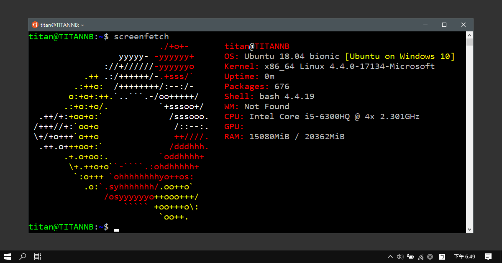
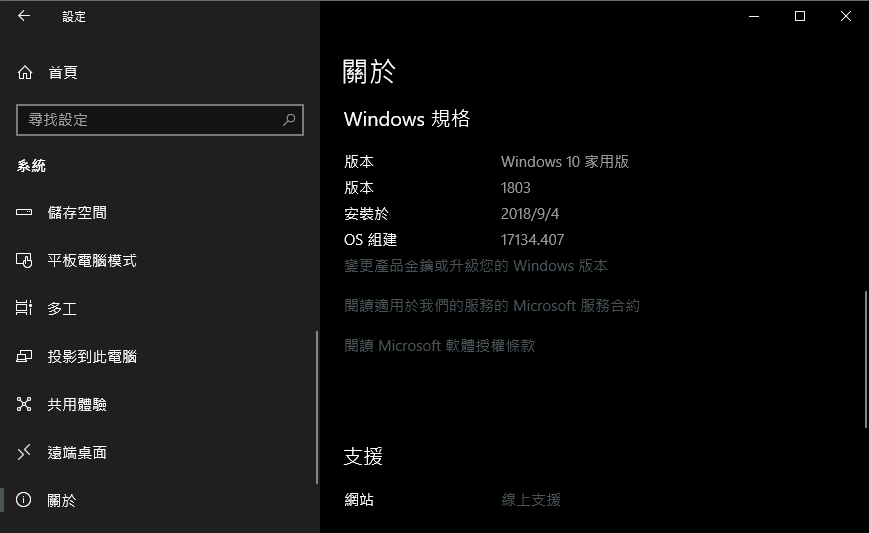
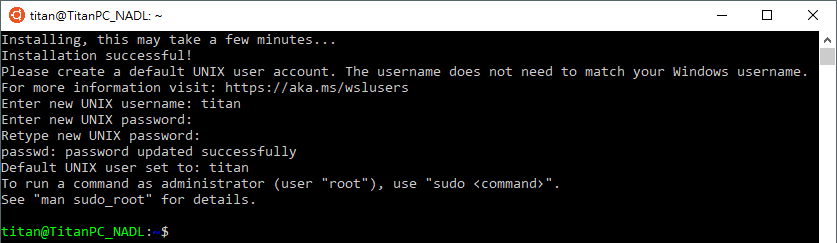
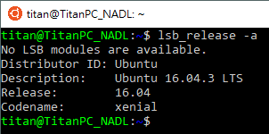
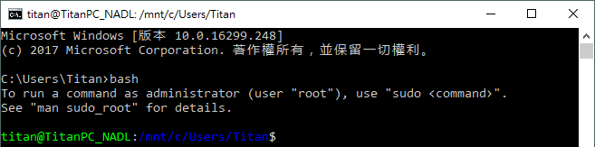
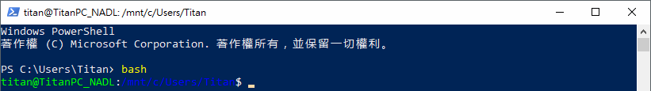
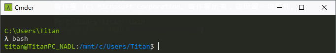
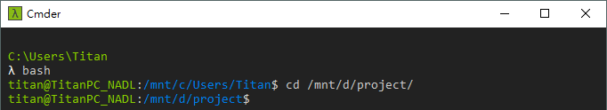

Windows Subsystem for Linux (簡稱 WSL)，由 Microsoft 與 Canonical 公司合作開發，可直接在 Windows 10 中建立一個 Linux 子系統，原生執行 Linux，還可自行選擇你想安裝的 Linux 發行版，例如：Ubuntu、Kali Linux、SUSE。
啟用 Windows Subsystem for Linux
使用系統管理者權限開啟 PowerShell，並執行下面命令啟用 Windows Subsystem for Linux 功能：
1 | |
如果顯示下面訊息就代表你沒有使用系統管理員開啟 PowerShell：
1 | |

接著等他跑一下…：

接著他會問是否要重啟電腦，因為預設是 Yes，所以可以直接按 Enter：
其實上面指令就等於去「控制台 > 程式集 > 開啟或關閉 Windows 功能」開啟「適用於 Linux 的 Windows 子系統」。
安裝 Linux 發行版
系統組建 (build) 必須要 Windows build 16215 或更新版本。若要想知道系統組建，可至 Windows 的「設定」內的「關於」即可查看。

你可以選擇你想安裝的 Linux 發行版：
- Ubuntu 16.04 LTS
- Ubuntu 18.04 LTS
- Debian GNU/Linux
- OpenSUSE Leap 42
- SUSE Linux Enterprise Server 12
- Kali Linux
如果在安裝後直接開啟 Ubuntu，就會顯示 Error: 0x8007007e 錯誤就代表你沒有啟用 Windows Subsystem for Linux 功能，詳情請參考上面：
1 | |
安裝後啟動 Linux 發行版，此時會開啟一個 console 視窗。因為是第一次開啟，所以會先安裝 WSL，等它安裝完後，就會看到下面畫面，系統要你建立一個新的 Unix 使用者名稱：
1 | |
接著是設定此使用者的密碼，這邊的使用者與你的 Windows 使用者名稱和密碼沒有任何關係。詳情可參考官方的 Linux User Account and Permissions | Microsoft Docs 文件。
如果顯示 $ 就代表設定完成囉！

執行 lsb_release -a 指令就會看到 Linux 的系統版本：

在其他終端使用 Bash
如果在使用 CMD 、 PowerShell 或其他終端 (例如我常用的 Cmder) 時想用 bash shell，可使用 bash 指令就可以啟動新的 Ubuntu shell：
1 | |



存取目錄
如果想存取 D:\project，在此環境下的路徑就是 /mnt/d/project。

小結
如果有在跨平台開發或維運的朋友，這個功能應該是一直以來的願望吧？讓你在 Windows 上可以直接處理事情，不用再多開 VM 來使用，不只省資源，也省硬碟空間，重點是不用等 VM 開機…
討論區